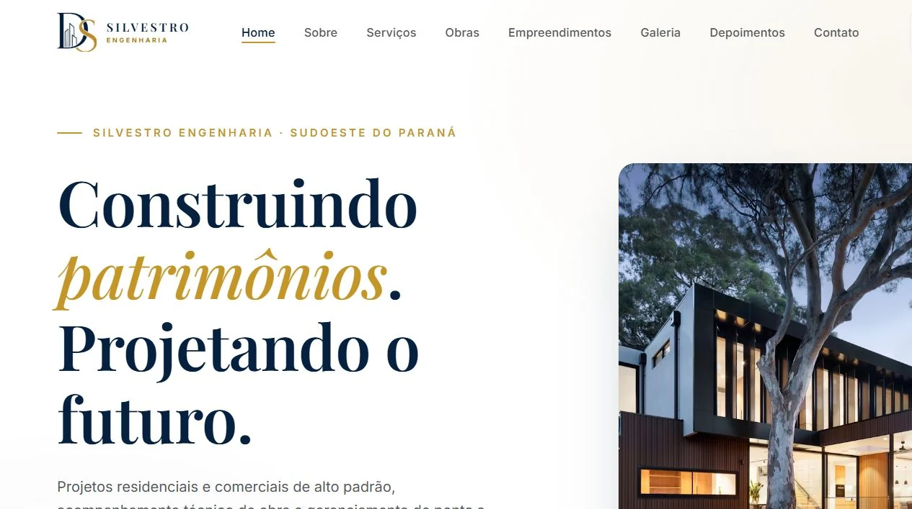
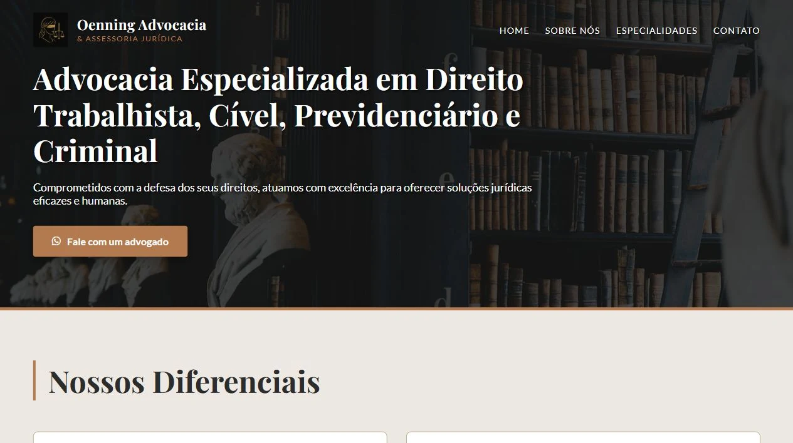
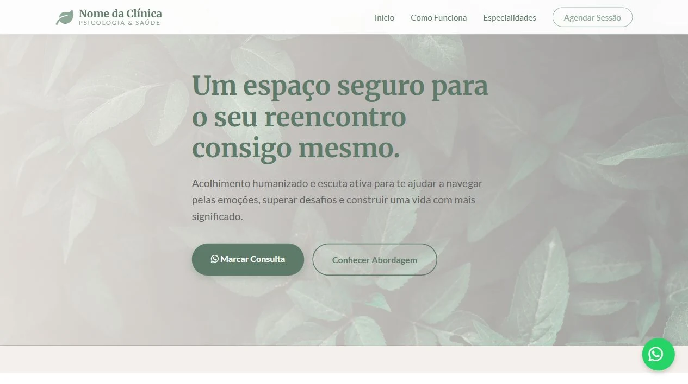

Seu concorrente
Site completo • confiança • contato imediato
A concorrência não vai esperar
Construímos a fundação digital que transforma buscas em contatos: sites rápidos, presença profissional e integrações que levam o cliente direto para o seu WhatsApp.
*Prazo para projetos com escopo e materiais definidos.
Um ótimo ponto físico não basta
Você pode ter a melhor equipe, o melhor atendimento e anos de mercado. Mas, quando alguém pega o celular e pesquisa pelo seu serviço, tudo isso desaparece se só a concorrência ocupa a tela.
Cada busca em que você não aparece é uma oportunidade entregue de graça para outra empresa. Não é falta de cliente. É falta de presença.
Site completo • confiança • contato imediato
Presença profissional • autoridade • conversão
Recupere agora ↗Sua identidade não precisa caber em um template
Uma presença forte precisa ser reconhecida antes mesmo de ser lida. Por isso, construímos experiências flexíveis, consistentes e alinhadas ao posicionamento de cada negócio.
Teste você mesmo: escolha uma cor e veja toda a experiência responder instantaneamente.
Do primeiro clique ao contato comercial
Fundação digital
Sua sede própria na internet: rápida, responsiva e construída para transformar atenção em confiança — e confiança em contato.
Ecossistema de vendas
Conectamos os pontos para o cliente encontrar, confiar e falar com você sem obstáculos ou etapas desnecessárias.
Da invisibilidade à presença
Sem termos complicados e sem etapas escondidas. Você acompanha o projeto do diagnóstico à publicação.
Pedir diagnóstico inicialEntendemos seu negócio, sua região, seus clientes e o espaço que você quer ocupar.
Organizamos conteúdo, estrutura, identidade e as chamadas que conduzem ao contato.
Desenvolvemos uma experiência rápida, responsiva e alinhada ao seu posicionamento.
Publicamos, conectamos seus canais e deixamos a estrutura pronta para crescer.
Projetos que já entraram no mapa
 Ver projeto ↗
Ver projeto ↗
Mercado imobiliário

Ver projeto ↗Engenharia e construção

Ver projeto ↗Advocacia

Ver projeto ↗Saúde e bem-estar
Seu cliente já está procurando. A pergunta é: por quem?
Fale com o Matheus e receba um diagnóstico direto da sua presença digital. Você vai entender onde está perdendo espaço e qual é o caminho mais rápido para recuperá-lo.
Agendar meu diagnóstico Resposta direta pelo WhatsApp • Sem compromisso